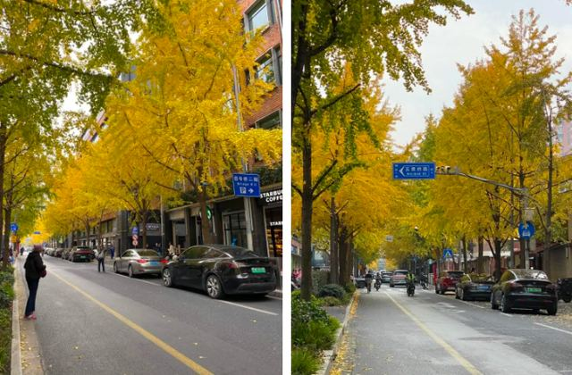

Xing Guang Photographic Equipment City 星光摄影器材城
Camera and lens market · Huangpu
CheckedOct 2026 visit read · 15 Nov 2026Dealers sell new and second-hand cameras and lenses. None joins the tourist tax-refund scheme.
Why go
The only specialist camera market that could be confirmed as trading in 2026. SmartShanghai's floor-by-floor visit on 28 Oct 2026 found new bodies and lenses from independent dealers on the ground floor (Canon, Nikon, Sony, Fujifilm, Leica, DJI), about 40 second-hand shops in Building C on floors 2 and 3 (including rare Chinese-made bodies such as Seagull and Peafowl), third-party lenses and accessories (Sigma, Tamron, SmallRig, Viltrox and others) and a film shop with about 400 film types in Building A, lighting (Profoto, Godox, Nanlite, Aputure) on Building A's fourth floor, and repair shops on Building C's fourth floor. Building B is permanently closed. It is good for cameras, lenses, lighting, tripods and repairs, and not for laptops or phones.
How to get there
Show the driver: 请送我到 黄浦区鲁班路288号 星光摄影器材城 (Please take me to Xing Guang Photographic Equipment City, 288 Luban Road). Start on the ground floor for new gear, then go to Building C, floors 2 and 3, for second-hand. Look up the same item on Xianyu (the second-hand marketplace app) first, then make an offer in person. SmartShanghai says second-hand usually costs more than online, but you can inspect it. Repairs take from an hour to a few days.
Local tip
Chinese brands such as DJI action cameras, Viltrox lenses and Godox flashes may be much cheaper than at home. New gear is not very negotiable, so ask for free extras (a memory card, bag or strap) instead of pushing on price.
Address notes
SmartShanghai's October 2026 article says the market occupies 288 and 300 Luban Lu.
Watch out
(1) SmartShanghai says ground-floor dealers give warranties and return policies, but check that the warranty is valid outside China and expect customs charges at home. (2) None of the shops take part in the tourist tax-refund scheme (SmartShanghai). (3) Payment methods and foreign-card acceptance are not reported, so carry cash as a fallback. (4) Inspect used gear in person before paying (shutter, lens mount, haze, water damage); this is general advice, not from the article. (5) Older listings say six floors in two buildings; the October 2026 article says Building B is permanently closed. (6) The market uses two street numbers: SmartShanghai's article says 288 and 300 Luban Road, and its venue page says 288 (near Xietu Road). Both are the same market, so show the driver 288. (7) The nearest station is Luban Road (Line 4), about 0.5 km away (SmartShanghai). (8) Popular Fujifilm models were short in February 2025; 2026 stock was not checked.
What was checked, and what was not
Read on 15 Nov 2026
SmartShanghai's visit piece (28 Oct 2026, a floor-by-floor walk-through) was read: address 288 and 300 Luban Road, hours 9:00 to 19:00, the floor layout and Building B closed. SmartShanghai's venue page (read 15 Nov 2026) is marked 'recently verified', with editor text updated 26 Jun 2026. A Shanghai Morning Post reporter found many enthusiasts on floors 1 and 2 on a weekday afternoon in February 2025. The company exhibited at the 23 to 26 Jul 2026 imaging fair, which is its own claim and does not prove the shop floor is trading. No closure or relocation notice was found. The nearest metro station, Luban Road (Line 4), was confirmed in OpenStreetMap geocoding.
Not checked
No Dianping or Amap rating was read. Payment methods and foreign-card acceptance were not found. Prices come from one visit (SmartShanghai, Oct 2026) and one February 2025 report. SmartShanghai's venue page says it was last verified about four months before the 15 Nov 2026 read. 2026 stock of popular Fujifilm models was not checked.
Sources
- SmartShanghai, Markets Tested article, 28 Oct 2026smartshanghai.com Opens in a new tab
- SmartShanghai venue pagesmartshanghai.com Opens in a new tab
- Shanghai Morning Post (随申Hi-新闻晨报) via Toutiao, 19 Feb 2025toutiao.com Opens in a new tab
- OpenStreetMap (Luban Road station)openstreetmap.org Opens in a new tab
Nearby

